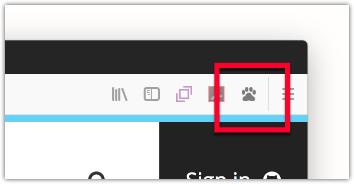

Commonly referred to as a browser action, this user interface option is a button added to the browser toolbar. Users click the button to interact with your extension.

The toolbar button (browser action) is very like the address bar button (page action). For the differences, and guidance on when to use what, see Page actions and browser actions.
You define the browser action's properties using the browser_action key in manifest.json:
"browser_action": {
"default_icon": {
"19": "button/geo-19.png",
"38": "button/geo-38.png"
},
"default_title": "Whereami?"
}
The only mandatory key is default_icon.
There are two ways to specify a browser action: with or without a popup. If you don't specify a popup, when the user clicks the button an event is dispatched to the extension, which the extension listens for using browserAction.onClicked:
browser.browserAction.onClicked.addListener(handleClick);
If you specify a popup, the click event is not dispatched: instead, the popup is shown when the user clicks the button. The user is able to interact with the popup and it closes automatically when the user clicks outside it. See the Popup article for more details on creating and managing popups.
Note that your extension can have only one browser action.
You can change many of the browser action properties programmatically using the browserAction API.
For details on how to create icons to use with your browser action, see Iconography in the Photon Design System documentation.
The webextensions-examples repository on GitHub contains two examples of extensions that implement browser actions: